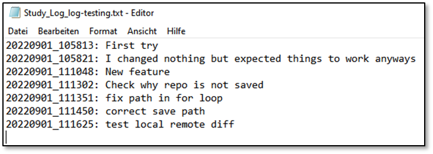
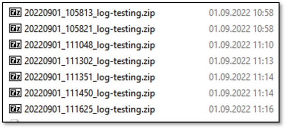

Reproducibility of research
Any research should be reproducible.
Why?
Let’s ask experts: https://esajournals.onlinelibrary.wiley.com/doi/10.1002/bes2.1801
Reproducible research is a by-product of careful attention to detail throughout the research process and allows researchers to ensure that they can repeat the same analysis multiple times with the same results, at any point in that process.
How?
One way is to keep a laboratory journal/notebook. One aspect of this is to document the boundary conditions of an experiment / simulation / optimization / … carefully to reproduce it at a later stage. Further, the reason or log for the study is helpful to show your future self or others why you conducted that specific study.
ebcpy helps you with this process by providing a little script.
You can use this script without installation of ebcpy. However, be sure to check the License.
# Import the function
from ebcpy.utils.reproduction import save_reproduction_archive
# Run your research study
run_my_fancy_research_study()
# Save for reproduction
save_reproduction_archive(title="StudyTitle")
At the end of your script, you are asked to prompt the log for this specific run of your study.
Please enter the specifications / log for this study:
Afterwards, two files are created in your current working directory:
StudyLog%StudyTitle%.txt
%DATE%%TIME%%StudyTitle%.zip
In the .txt, all runs of your study are documented:
 {kind=link}
{kind=link}
In the .zip, all files to reproduce your study are saved. Contents:
Information_to_reproduce.txt
python/requirements.txt
python/Reproduce_python_environment.txt
Results/.. (If you pass additional files - see further down)
study_repository/.. (If your study-script is a repo itself)
{kind=link}
{kind=link}
{kind=link}
If you use our FMU or DymolaAPI, relevant infos to reproduce these studies are saved as well. Further, as long as you use git, every information (url, commit, local and remote differences) are saved. Last, you can specify additional files to save along this information. An example is the following setup:
# Import the function
from ebcpy.utils.reproduction import save_reproduction_archive
# Run your research study
def run_my_fancy_research_study():
# Doing something, like creating a plot
return ["path/to/my/saved/plot.png"]
result_files = run_my_fancy_research_study()
# Save for reproduction
save_reproduction_archive(
title="StudyTitle",
files=result_files
)
In this example, the file plot.png is saved in the Results folder in your .zip.
Further settings can be checked in the docstring of save_reproduction_archive.
Can I help?
Yes! If you find issues with the code, please raise an issue! If you have feature requests, please also raise an issue. If you don’t use Python or simulation software like Dymola / FMU, be sure to develop similar scripts to enable reproducibility of your research (e.g. MatLab, TwinCAT, …).